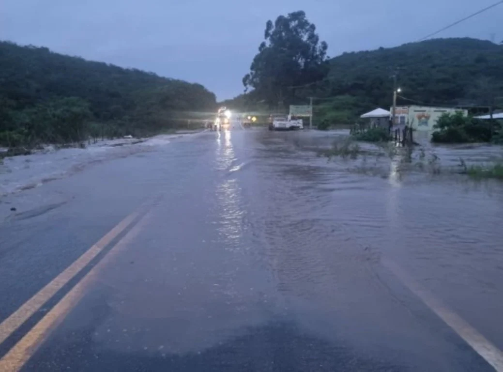

Repórter Davi
Notícias de Feira de Santana e Região
Repórter Davi
Notícias de Feira de Santana e Região
Um motorista que passou pela via por volta das 18h relatou que há pelo menos outros dois trechos com alagamentos ao longo da BR-330.
Publicado em 02/03/2026

Foto: Reprodução/ Giro Ipiaú
Um lago que fica às margens da BR-330, no município de Jequié, transbordou nesta segunda-feira (2), por conta das fortes chuvas na região. A água invadiu a rodovia no trecho entre Jitaúna e Jequié, o que representa um perigo para os motoristas que passam pela pista.
De acordo com informações do Giro Ipiaú, um motorista que passou pela via por volta das 18h relatou que há pelo menos outros dois trechos com alagamentos ao longo da BR-330, além desse ponto.
Ainda segundo o Giro Ipiaú, equipes da Polícia Rodoviária Federal (PRF) se encaminharam para acompanharam a situação do local, bem como adotar as medidas necessárias para garantir a segurança das pessoas que passam pela via.